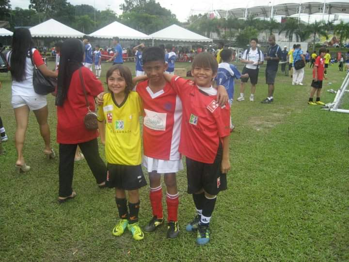

Football
Playing football is one of my favourite things to do in my life . For me its not just a game its part of my life . I started to play football since i was 9 years old . First i play for Bintang Biru club , then when i was 12 i represent penang Under 12 years old team . Then i lead my Penang free school team in state tournament during my senior year at secindary school . Lionel messi is my idol and he is the reason i started to play football , he is like a little magician who could do things that you would not believe it could happen in football , he is the greatest football player in history and i belive we will never see such a talents in football ever again .